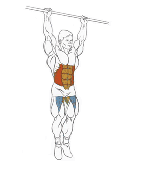

Тренировка А (Мышцы груди, бицепса и пресса):
1. Жим лёжа.
2. Разведение гантелей лёжа на скамье с положительным наклоном или сведение рук в тренажёре.
или
3. Жим от груди в тренажёре или на скамье с положительным наклоном.
или
4. Подъём штанги на бицепс.
5. Подъём на бицепс в блоке или подъём гантелей хватом "молоток" или подъём штанги на скамье.
или
или
6. Подъём корпуса мышцами пресса или подъём ног в висе.
или

Тренировка Б (Мышцы спины и трицепса):
1. Классическая или румынская становая тяга.
или
2. Тяга штанги к поясу прямым или обратным хватом или тяга Т-грифа в тренажёре.
или
или
3. Верхняя тяга блока прямым или обратным хватом или подтягивания.
или
или
4. Разгибания на бицепс в блоке или в наклоне.
или
5. Французский жим лёжа или сидя.
или
6. Шраги с гантелями стоя.
Тренировка В (Мышцы ног и плеч):
1. Приседания со штангой на плечах или на груди.
или
2. Гакк-приседания или жим ногами в тренажёре.
или
3. Разгибания ног в тренажёре.
4. Подъёмы на носки стоя и сгибание ног в тренажёре (чередовать от тренировки к тренировке).
или
5. Жим штанги сидя перед или за собой.
или
6. Тяга штанги к подбородку.